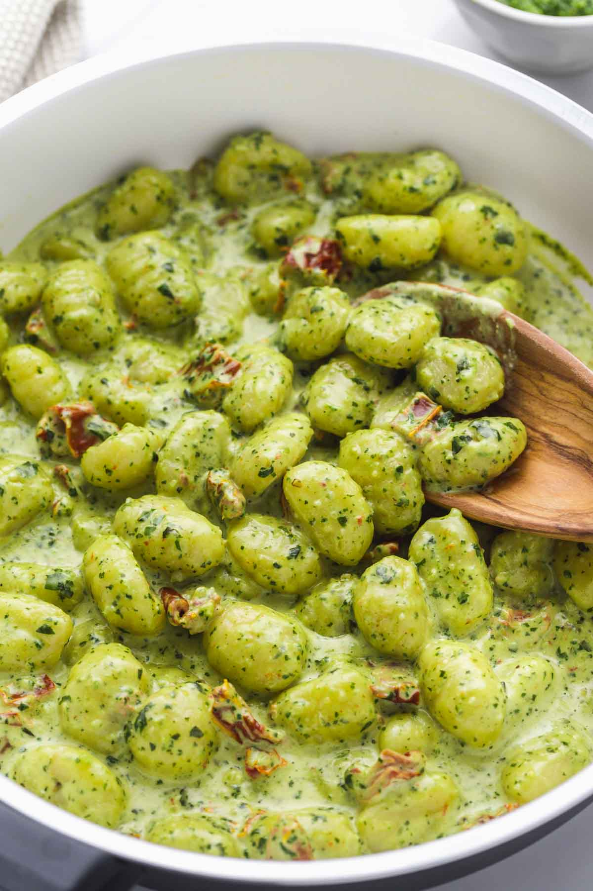

Pesto Gnocchi

Ingredients
li*10
- 1 pound shelf-stable gnocchi
- 3/4 cup basil pesto (store-bought or homemade)
- Juice of 1 lemon
- 1/2 cup chopped sun-dried tomatoes oil drained
- 2 cups baby spinach
- 1/4 cup toasted pine nuts
- 1/4 cup grated Parmesan plus more for serving
- 1/4 teaspoon red pepper flakes
- 1/4 teaspoon kosher salt
- 1/4 teaspoon black pepper
Instructions
- Cook the gnocchi according to package instructions. Save 1/2 cup cooking water.
- Warm the pesto over medium heat in a large skillet on the stove. Add the reserved cooking water and lemon juice. Give it 2-3 minutes start bubbling and to thicken slightly.
- Stir the gnocchi into the sauce.
- Fold in the sun-dried tomatoes and spinach. Continue cooking until the spinach wilts, about 1-2 minutes.
- Stir in the pine nuts, Parmesan, red pepper flakes, salt and pepper.
- Top with additional grated Parmesan as desired before serving.